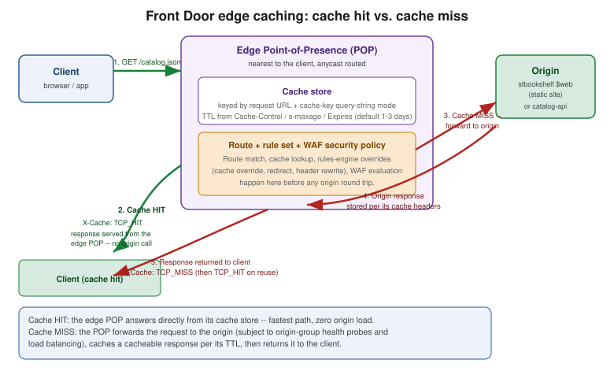

Front Door and CDN
|
This content was generated with the assistance of AI and should be verified against the official documentation before being relied on in production. |
Examples on this page target Azure CLI 2.90.0 with the front-door CLI extension (published as part of the
cdn extension family, version 2.85.0 or higher — it installs automatically the first time any az afd
command runs); re-verify all version, retirement-date, and feature-availability claims against
the Azure Front Door documentation before relying on them, since
this page covers a product area with an unusually long and active retirement history.
This page walks through global edge delivery and CDN for Bookshelf with Azure Front Door: which of Microsoft’s
several generations of CDN product Front Door replaced (and when each one stops working), Front Door’s own
Standard vs. Premium tiers, its object model, putting both the Bookshelf static website
(Blob Storage) and catalog-api (Container Apps) behind one
profile, caching behavior, the rules engine, purge, custom domains, WAF policies, Private Link origins, and the
observability and pricing a reader needs before calling this "production ready."
CDN and edge product history: retirements and migration paths
Azure has offered content delivery through several distinct products over the years, three of which are now retired or in the process of retiring. Understanding this history matters because a reader arriving at an older tutorial, an existing subscription, or a Terraform module may well encounter one of these rather than current Azure Front Door Standard/Premium.
- Azure CDN Standard from Akamai
-
The first CDN product Azure resold, powered by Akamai’s network. Microsoft and Akamai ended their partnership, and Azure CDN Standard from Akamai stopped accepting new profiles and traffic on 31 October 2023; existing endpoints were kept alive only long enough to drain remaining traffic, with no migration tool provided beyond the general change CDN provider guidance of repointing DNS/
CNAMErecords at a replacement profile. Anyone still depending on this tier needed to have already moved by that date. - Azure CDN from Edgio
-
A newer partner CDN, powered by Edgio’s network, that was retired abruptly rather than on a Microsoft-chosen timeline: Edgio itself shut down its platform, and Microsoft’s own migration guidance (the Edgio retirement FAQ) points at 15 January 2025 as the date the underlying Edgio platform stopped serving traffic. As with Akamai, the fix is to provision a replacement profile (Azure Front Door Standard/Premium, or the classic CDN tier while it still accepts changes) and repoint DNS — there is no in-place upgrade path from an Edgio-backed endpoint.
- Azure CDN Standard from Microsoft (classic)
-
Often just called "CDN classic," this is Microsoft’s own first-party CDN offering that predates Front Door. Since 15 August 2025 it no longer accepts new profile creation, new domain onboarding, or new managed certificates, and Microsoft has published a firm retirement date of 30 September 2027, after which existing classic CDN profiles stop working entirely and lose API, portal, and support access. Existing profiles can still be updated (image swaps, rule changes, and so on) right up to that date. Microsoft provides a zero-downtime migration tool (available in the Azure portal) that moves a classic CDN profile’s configuration into an equivalent Front Door Standard or Premium profile without an outage; read its documented breaking changes and resource-mapping sections before running it, since a handful of classic-only settings (some rules-engine match conditions, certain compression behaviors) don’t map one to one.
- Azure Front Door (classic)
-
The original Front Door product, offered before the current Standard/Premium tiers existed. 1 April 2025 was the last day to create new Front Door (classic) profiles; existing profiles keep working, but with no new-domain onboarding or new managed certificates, until Front Door (classic) is fully retired on 31 March 2027. The same migration tooling and guidance used for classic CDN covers migrating a classic Front Door profile to Standard or Premium, including a documented breaking-changes and resource-mapping section specific to Front Door (classic).
The common thread across all four retirements is the same destination: Azure Front Door Standard or Premium, which is what the rest of this page covers, and which supersedes every one of the above rather than being one more alternative among them.
References: Azure CDN Standard from Microsoft (classic) retirement FAQ, Azure CDN from Edgio retirement FAQ, Azure Front Door (classic) retirement FAQ, Migrate Azure CDN (classic) to Front Door Standard or Premium, Migrate Azure Front Door (classic) to Standard or Premium, Migrate between CDN providers.
Front Door Standard vs. Premium
Front Door ships as two SKUs of the same underlying product, chosen at profile-creation time with
--sku Standard_AzureFrontDoor or --sku Premium_AzureFrontDoor (changeable afterward via
az afd profile update --sku, one direction only — Standard can be upgraded to Premium, not the reverse):
| Capability | Standard vs. Premium |
|---|---|
Core delivery (caching, routes, rule sets, custom domains, managed certificates) |
Identical on both tiers. |
Web Application Firewall |
Both tiers support custom WAF rules (match rules, rate-limit rules). Only Premium (and legacy Front Door classic) includes Azure-managed WAF rule sets — the Default Rule Set and Bot Manager Rule Set covered under WAF policies below; Standard cannot attach a managed rule set to a WAF policy at all. |
Private Link origins |
Premium only (Private Link origins (Premium) and origin lock-down). Standard cannot connect to an origin over Private Link. |
Bot protection |
The managed Bot Manager Rule Set is Premium-only; Standard is limited to whatever bot-pattern matching a custom WAF rule can express by hand. |
Pricing model |
Both bill a base fee per profile plus data-transfer/request charges; Premium’s base fee is higher, reflecting the WAF-managed-rules and Private Link capability — see Pricing model. |
Bookshelf’s afd-bookshelf profile in this page’s walkthrough is created as Premium, specifically so the
Private Link origin section later on has something real to configure; drop to Standard_AzureFrontDoor if
managed WAF rule sets and Private Link origins are not required.
The object model: profile, endpoint, origin group, origin, route, rule set, security policy
Every Front Door deployment is built from the same six resource types, always nested in the same order. A
profile is the top-level Front Door resource (afd-bookshelf) and the billing/SKU boundary. Inside it, an
endpoint is a logical grouping of domains — it gets Front Door’s own generated hostname
(<endpoint>-<hash>.z01.azurefd.net) plus any custom domains later attached to its routes. A route lives
under an endpoint and matches incoming request patterns (/, /api/) to one origin group; it also carries
the route’s caching configuration and any attached rule set. An origin group is a load-balanced,
health-probed pool of one or more origins — the actual backend endpoints (Bookshelf’s storage static
website, `catalog-api’s Container Apps ingress). A security policy attaches a WAF policy to one or more
domains at the profile level, independently of routes.
(Standard or Premium SKU)"] ENDPOINT["Endpoint: bookshelf
(generated + custom domains)"] ROUTE1["Route: static-site
pattern /*"] ROUTE2["Route: catalog-api
pattern /api/*"] RULESET["Rule set:
cache overrides, redirects,
header rewrites"] OG1["Origin group: og-static-site
(health probe, load balancing)"] OG2["Origin group: og-catalog-api
(health probe, load balancing)"] ORIGIN1["Origin: stbookshelf
static website"] ORIGIN2["Origin: catalog-api
Container Apps ingress"] SECPOL["Security policy:
WAF policy bound to domain(s)"] PROFILE --> ENDPOINT ENDPOINT --> ROUTE1 ENDPOINT --> ROUTE2 ROUTE1 --> OG1 ROUTE2 --> OG2 ROUTE2 -.-> RULESET OG1 --> ORIGIN1 OG2 --> ORIGIN2 PROFILE -.-> SECPOL SECPOL -.-> ENDPOINT
- Custom domain
-
Not shown as a separate box above because it attaches to a route (which domains that route answers for) and is what a security policy targets; covered in depth under Custom domains and managed certificates.
Creating the profile and endpoint
In the Azure portal
-
Search for Front Door and CDN profiles and select Create.
-
Choose Explore other offerings → Azure Front Door → Premium (or Standard), then Continue to create a Front Door.
-
On the Basics tab, pick the subscription and
$RG, and name the profileafd-bookshelf. -
Skip the wizard’s inline endpoint/origin/route quickstart for this walkthrough — select Add profile with just the profile fields filled in, then build the endpoint, origin groups, origins, and routes as separate blades (Endpoint manager, Origin groups) exactly as the CLI steps below do, so the object model in The object model: profile, endpoint, origin group, origin, route, rule set, security policy stays visible one resource at a time.
With the Azure CLI
export RG=rg-bookshelf
export LOCATION=eastus2
export AFD_PROFILE=afd-bookshelf
export AFD_ENDPOINT=bookshelf
az group create --name "$RG" --location "$LOCATION"
az extension add --name front-door --upgrade
az provider register --namespace Microsoft.Cdn
az afd profile create \
--profile-name "$AFD_PROFILE" \
--resource-group "$RG" \
--sku Premium_AzureFrontDoor
az afd endpoint create \
--profile-name "$AFD_PROFILE" \
--resource-group "$RG" \
--endpoint-name "$AFD_ENDPOINT" \
--enabled-state Enabledaz afd endpoint create returns the endpoint’s generated hostname (hostName in the output, of the shape
bookshelf-<hash>.z01.azurefd.net); every route on this endpoint is reachable at that hostname immediately,
before any custom domain is attached.
Origin groups, health probes, and load balancing
An origin group is where health probing and load balancing are configured, once, for every origin it contains.
Bookshelf needs two origin groups: one for the static site’s storage origin, one for catalog-api.
In the Azure portal
-
Open
afd-bookshelf→ Origin groups → Add. -
Name it
og-static-site, leave Load balancing at its defaults (or tune Sample size/Successful samples required/Additional latency), and configure the Health probes section: path, protocol, and request method. -
Repeat for
og-catalog-api, using a probe pathcatalog-apiactually serves (for example its Spring Boot Actuator/actuator/healthendpoint) rather than/.
With the Azure CLI
# Static-site origin group: a lightweight probe against the site root
az afd origin-group create \
--profile-name "$AFD_PROFILE" \
--resource-group "$RG" \
--origin-group-name og-static-site \
--probe-request-type GET \
--probe-protocol Https \
--probe-path / \
--probe-interval-in-seconds 60 \
--sample-size 4 \
--successful-samples-required 3 \
--additional-latency-in-milliseconds 50
# catalog-api origin group: probe its own health endpoint, not '/'
az afd origin-group create \
--profile-name "$AFD_PROFILE" \
--resource-group "$RG" \
--origin-group-name og-catalog-api \
--probe-request-type GET \
--probe-protocol Https \
--probe-path /actuator/health \
--probe-interval-in-seconds 30 \
--sample-size 4 \
--successful-samples-required 3 \
--additional-latency-in-milliseconds 50--probe-interval-in-seconds defaults to 240 seconds if omitted, which is far too slow to notice
catalog-api going unhealthy in a demo — set it explicitly. Load balancing itself is latency-based:
--sample-size probes are considered, an origin must succeed in at least --successful-samples-required of
them to be eligible, and Front Door distributes traffic across every origin whose measured latency falls
within --additional-latency-in-milliseconds of the fastest eligible origin, weighted by each origin’s
--weight (set on the origin itself, see below) — not a strict lowest-latency-wins failover.
Origins: the Bookshelf static site and catalog-api
In the Azure portal
-
Open
og-static-site→ Add an origin. Choose origin type Storage account (or Custom), pickstbookshelf, and enable Origin host header as the storage static-website endpoint hostname (stbookshelf.z13.web.core.windows.net, matching the naming from Blob Storage). -
Open
og-catalog-api→ Add an origin. Choose Custom, and entercatalog-api’s Container Apps FQDN (`az containerapp show --name catalog-api --resource-group "$RG" --query properties.configuration.ingress.fqdn) as both host name and origin host header.
With the Azure CLI
STATIC_SITE_HOST=stbookshelf.z13.web.core.windows.net
CATALOG_API_HOST=$(az containerapp show --name catalog-api --resource-group "$RG" \
--query properties.configuration.ingress.fqdn --output tsv)
az afd origin create \
--profile-name "$AFD_PROFILE" \
--resource-group "$RG" \
--origin-group-name og-static-site \
--origin-name stbookshelf-static \
--host-name "$STATIC_SITE_HOST" \
--origin-host-header "$STATIC_SITE_HOST" \
--http-port 80 \
--https-port 443 \
--priority 1 \
--weight 1000 \
--enabled-state Enabled
az afd origin create \
--profile-name "$AFD_PROFILE" \
--resource-group "$RG" \
--origin-group-name og-catalog-api \
--origin-name catalog-api-origin \
--host-name "$CATALOG_API_HOST" \
--origin-host-header "$CATALOG_API_HOST" \
--http-port 80 \
--https-port 443 \
--priority 1 \
--weight 1000 \
--enabled-state Enabled--origin-host-header matters for both origins here: a storage static website and a Container Apps ingress
both route on the incoming Host header, so it must match the origin’s own hostname rather than whatever
public hostname the client used to reach Front Door — otherwise the origin returns its default/404 page
instead of Bookshelf’s content. --priority (1—5, lower is preferred) and --weight (1—1000) only matter
once an origin group has more than one origin; both origin groups here start with a single origin.
Routes and caching behavior
A route binds an endpoint’s incoming pattern to an origin group and carries its own cache configuration.
Bookshelf uses two routes on the bookshelf endpoint: / for the static site, /api/ for catalog-api.
Caching behavior
Front Door only caches responses to GET/HEAD requests that carry no Set-Cookie/Authorization header
issue and whose response is cacheable per standard HTTP semantics — most importantly whether the response
sends caching headers at all. Precedence for how long a cached object is kept, from highest to lowest:
Cache-Control: s-maxage, then Cache-Control: max-age, then the Expires header. If an origin sends none of
these, Front Door still caches the response and applies a default TTL of one to three days (the exact figure
is origin- and content-type-dependent and not user-configurable) — which is why Bookshelf’s static site should
set explicit Cache-Control headers on its assets rather than relying on this default.
Query strings change how the cache key itself is computed, controlled per route by
query-string-caching-behavior inside --cache-configuration:
| Mode | Behavior |
|---|---|
|
The entire query string is stripped from the cache key — |
|
Every distinct query string is its own cache entry. Safest default for dynamic content, at the cost of a lower cache-hit ratio. |
|
Only the query-string keys named in |
|
The inverse: only the named keys vary the cache key; every other query-string parameter is ignored. |
Compression is a nested --cache-configuration setting (compression-settings), with an
is-compression-enabled switch and a content-types-to-compress list: Front Door compresses a cacheable
response on the fly for any listed content type, provided the response is larger than 1 KB and smaller than
8 MB and the client’s Accept-Encoding allows it. Every response Front
Door serves carries an X-Cache response header reporting exactly what happened at the edge: TCP_HIT (served
from cache), TCP_MISS (not cached, fetched from origin and then cached), TCP_REMOTE_HIT (served from a
different, upstream Front Door cache tier), and CONFIG_NOCACHE (caching disabled for this route/response) are
the values most worth recognizing when troubleshooting.

In the Azure portal
-
Open
bookshelf(the endpoint) → Routes → Add a route. -
Name it
static-site, set Patterns to match to/, *Origin group toog-static-site, Https redirect to Enabled, and expand Caching: toggle it on, set Query string caching behavior to Ignore query string (the static site has no meaningful query-string variation), and add any content types to compress under Compression. -
Add a second route
catalog-api, pattern/api/, origin groupog-catalog-api, and under *Caching set Query string caching behavior to Use query string so paginated/filteredcatalog-apiresponses each get their own cache entry.
With the Azure CLI
There is no --enable-caching flag on az afd route create/update — caching is configured (or left off
entirely) through the single --cache-configuration object, which also carries compression and query-string
behavior; omitting --cache-configuration altogether disables caching for that route.
az afd route create \
--profile-name "$AFD_PROFILE" \
--resource-group "$RG" \
--endpoint-name "$AFD_ENDPOINT" \
--route-name static-site \
--origin-group og-static-site \
--supported-protocols Https \
--patterns-to-match "/*" \
--forwarding-protocol MatchRequest \
--https-redirect Enabled \
--link-to-default-domain Enabled \
--cache-configuration "{query-string-caching-behavior:IgnoreQueryString,compression-settings:{is-compression-enabled:true,content-types-to-compress:[text/html,text/css,application/javascript,application/json]}}"
az afd route create \
--profile-name "$AFD_PROFILE" \
--resource-group "$RG" \
--endpoint-name "$AFD_ENDPOINT" \
--route-name catalog-api \
--origin-group og-catalog-api \
--supported-protocols Https \
--patterns-to-match "/api/*" \
--forwarding-protocol MatchRequest \
--https-redirect Enabled \
--link-to-default-domain Enabled \
--cache-configuration "{query-string-caching-behavior:UseQueryString,compression-settings:{is-compression-enabled:true,content-types-to-compress:[application/json]}}"--supported-protocols Https alone, with --https-redirect Enabled, means Front Door never forwards plain
HTTP to either origin; --forwarding-protocol MatchRequest (the default) forwards to the origin using
whatever protocol the client used to reach Front Door. Every attribute set here is a route-level property,
so caching, redirect, and forwarding behavior can all differ between / and /api/ on the same endpoint.
--cache-configuration is written in the Azure CLI shorthand syntax with kebab-case keys, exactly as in the
az afd route reference examples; az afd route create --cache-configuration ?? prints the full shape.
Rules engine
A rule set is a named, reusable collection of ordered if match-condition then action rules, attached to one
or more routes. It is where cache overrides, redirects, and header rewrites live — capabilities the classic
CDN rules engine also had, but with a richer condition/action vocabulary (regular expressions and server
variables among them) on Standard/Premium.
In the Azure portal
-
Open
afd-bookshelf→ Rule sets → Add, name itrs-catalog-api. -
Inside it, Add a rule: name
no-cache-write-endpoints, condition Request method equalsPOST,PUT,PATCH, orDELETE, action Cache-Key Query String / Route Configuration Override → Cache behavior: Bypass cache, so writes tocatalog-apinever get cached even if a client sendsGET-shaped tooling against them. -
Add a second rule: condition Request path begins with
/legacy-catalog, action URL Redirect → Found (302) to/api/catalog, covering a retiredcatalog-apipath. -
Under
bookshelf→ Routes →catalog-api, attachrs-catalog-apiin the Rule set field.
With the Azure CLI
az afd rule-set create \
--profile-name "$AFD_PROFILE" \
--resource-group "$RG" \
--rule-set-name rs-catalog-api
# Cache-bypass rule for write methods, and a header rewrite adding a cache-diagnostics header
az afd rule create \
--profile-name "$AFD_PROFILE" \
--resource-group "$RG" \
--rule-set-name rs-catalog-api \
--rule-name bypassCacheForWrites \
--order 1 \
--match-variable RequestMethod \
--operator Equal \
--match-values POST PUT PATCH DELETE \
--action-name RouteConfigurationOverride \
--cache-behavior BypassCache
# Redirect a retired path to its replacement
az afd rule create \
--profile-name "$AFD_PROFILE" \
--resource-group "$RG" \
--rule-set-name rs-catalog-api \
--rule-name redirectLegacyCatalog \
--order 2 \
--match-variable UrlPath \
--operator BeginsWith \
--match-values "/legacy-catalog" \
--action-name UrlRedirect \
--redirect-type Found \
--destination-path "/api/catalog"
# Attach the rule set to the catalog-api route -- rule sets are referenced by full resource ID
RS_ID=$(az afd rule-set show \
--profile-name "$AFD_PROFILE" \
--resource-group "$RG" \
--rule-set-name rs-catalog-api \
--query id -o tsv)
az afd route update \
--profile-name "$AFD_PROFILE" \
--resource-group "$RG" \
--endpoint-name "$AFD_ENDPOINT" \
--route-name catalog-api \
--formatted-rule-sets "[{id:$RS_ID}]"The exact flags on az afd rule create/az afd rule action add/az afd rule condition add are numerous
(match variables span request method, path, header, query string, cookie, and several others; actions span
cache overrides, header actions, URL redirect/rewrite) — confirm the current shape with az afd rule create
--help before relying on any one condition/action pairing shown above, since the rules engine’s match/action
vocabulary is one of the areas Microsoft extends most often.
Purge
Purging removes cached content from every edge POP immediately, ahead of its TTL — necessary after a Bookshelf release that changes static-site assets without changing their URLs, since otherwise stale content would continue to be served until each POP’s cached copy naturally expires.
In the Azure portal
-
Open
bookshelf(the endpoint) → Purge. -
Enter one or more content paths (
/index.html,/assets/for a wildcard directory purge), or leave the default/to purge everything on the endpoint, and select Purge.
With the Azure CLI
az afd endpoint purge \
--profile-name "$AFD_PROFILE" \
--resource-group "$RG" \
--endpoint-name "$AFD_ENDPOINT" \
--content-paths "/index.html" "/assets/*"A wildcard purge path must end in /* and matches an entire subtree; purging is asynchronous and can take a
few minutes to reach every POP globally. --domains restricts the purge to specific custom domains on the
endpoint instead of every domain the endpoint answers for.
Custom domains and managed certificates
A custom domain is created under the profile, validated by DNS TXT record, then attached to whichever
route(s) should answer for it — the same free, auto-renewing managed-certificate model
Container Apps and Blob Storage use
elsewhere in Bookshelf, issued by DigiCert on Front Door’s behalf.
| Domain type | Record type | What it points to |
|---|---|---|
Apex ( |
|
The endpoint’s hostname (an |
Subdomain ( |
|
The endpoint’s generated hostname ( |
Either way, a TXT record at _dnsauth.<subdomain> holding the domain’s validation token is required before
Front Door will issue a certificate for it; propagation of that record is the most common source of a
custom-domain validation stuck in Pending (see Troubleshooting).
In the Azure portal
-
Open
afd-bookshelf→ Domains → Add. -
Enter the domain, choose AFD managed under Certificate type, and select Add — this creates the domain resource and shows the
_dnsauthTXTrecord to create. -
Once the DNS records above are created and the Domain validation state turns Approved, open the relevant route (
static-siteforshop.example) and add the domain under Custom domains.
With the Azure CLI
export DOMAIN=shop.example
az afd custom-domain create \
--profile-name "$AFD_PROFILE" \
--resource-group "$RG" \
--custom-domain-name shop-example \
--host-name "$DOMAIN" \
--minimum-tls-version TLS12 \
--certificate-type ManagedCertificate
# Domain validation TXT record value and target host to create at the DNS provider
az afd custom-domain show \
--profile-name "$AFD_PROFILE" \
--resource-group "$RG" \
--custom-domain-name shop-example \
--query "{state:domainValidationState, txtValue:validationProperties.validationToken, tokenExpires:validationProperties.expirationDate}"
# After DNS TXT propagates and validation succeeds, attach the domain to its route by resource ID
CD_ID=$(az afd custom-domain show \
--profile-name "$AFD_PROFILE" \
--resource-group "$RG" \
--custom-domain-name shop-example \
--query id -o tsv)
az afd route update \
--profile-name "$AFD_PROFILE" \
--resource-group "$RG" \
--endpoint-name "$AFD_ENDPOINT" \
--route-name static-site \
--formatted-custom-domains "[{id:$CD_ID}]"Certificate issuance and renewal are both fully automatic once validation succeeds; a renewed managed
certificate re-validates against the same TXT record, so it must stay in place for the life of the domain,
not just during initial setup.
WAF policies
A WAF policy is created independently of any Front Door profile, then bound to one or more domains through a security policy — the object model’s own dedicated resource type for this, distinct from a rule set.
- Custom rules (both tiers)
-
Match rules (priority, match conditions over IP, geo, header, query string, and so on, plus an allow/block/log action) and rate-limit rules (the same conditions plus a request-rate threshold per client, e.g. throttling
catalog-api’s `/api/orderspath at 100 requests per minute per IP). - Managed rule sets (Premium only)
-
The Default Rule Set (DRS), currently version 2.1, is Microsoft’s OWASp-Core-Rule-Set-derived ruleset covering SQL injection, cross-site scripting, remote file inclusion, and similar common exploit signatures, augmented with Microsoft’s own Threat Intelligence Collection; the Bot Manager Rule Set separately classifies and can block or log known bad-bot signatures while allowing verified good bots (search engine crawlers, uptime monitors) through. Front Door (classic) is capped at DRS 1.1 or below and Standard cannot attach either managed rule set at all — only Premium (and, for now, classic) get DRS 2.1 and Bot Manager.
In the Azure portal
-
Search for WAF policies (Front Door) and select Create.
-
Name it
waf-bookshelf, set Policy state to Enabled and Policy mode to Detection initially (switch to Prevention once false positives are tuned out — see Troubleshooting). -
On Managed rules (Premium only), add Microsoft Default Rule Set 2.1 and Microsoft Bot Manager Rule Set.
-
On Custom rules, add a rate-limit rule scoped to
/api/ordersas described above. -
On Associated domains, associate
waf-bookshelfwith theshop.examplecustom domain — this is what creates the security policy under the covers.
With the Azure CLI
az network front-door waf-policy create \
--name wafbookshelf \
--resource-group "$RG" \
--sku Premium_AzureFrontDoor \
--mode Detection
az network front-door waf-policy managed-rules add \
--policy-name wafbookshelf \
--resource-group "$RG" \
--type Microsoft_DefaultRuleSet \
--version 2.1
az network front-door waf-policy managed-rules add \
--policy-name wafbookshelf \
--resource-group "$RG" \
--type Microsoft_BotManagerRuleSet \
--version 1.0
WAF_POLICY_ID=$(az network front-door waf-policy show --name wafbookshelf --resource-group "$RG" --query id --output tsv)
az afd security-policy create \
--profile-name "$AFD_PROFILE" \
--resource-group "$RG" \
--security-policy-name secpol-shop-example \
--web-application-firewall "{
associations: [{domains: [{id: '<custom-domain-resource-id>'}], patternsToMatch: ['/*']}],
policy: {id: '$WAF_POLICY_ID'}
}"The WAF policy resource itself is managed under az network front-door waf-policy (a different, older command
group than az afd, since WAF policies are shared infrastructure also used by Application Gateway and the
classic Front Door) rather than under az afd; only the security policy that binds it to a domain is an
az afd resource. Substitute the custom domain’s resource ID (from az afd custom-domain show --query id) for
<custom-domain-resource-id> above.
Private Link origins (Premium) and origin lock-down
Premium-tier Front Door can reach an origin over Azure Private Link rather than the public internet: Front Door creates a private endpoint from its own managed regional virtual network into the target resource, which must be approved (portal, CLI, or PowerShell) before traffic flows. Supported origin types include Blob Storage, a storage static website, App Service (Web App/Function App), Azure Container Apps, API Management, Application Gateway, and internal load balancers (including an AKS-fronting one); an origin group cannot mix Private-Link and public origins, and mTLS to the origin is not supported either way.
In the Azure portal
-
Open
og-catalog-api→ thecatalog-api-originorigin → enable Private Link → select thecatalog-apiContainer App as the target resource and a supported region. -
Approve the resulting private endpoint request under the Container App’s own Networking → Private endpoint connections blade (or the equivalent blade for whichever resource type is the origin).
With the Azure CLI
az afd origin update \
--profile-name "$AFD_PROFILE" \
--resource-group "$RG" \
--origin-group-name og-catalog-api \
--origin-name catalog-api-origin \
--shared-private-link-resource "{
privateLink: {id: '<container-app-resource-id>'},
groupId: 'containerapps',
privateLinkLocation: '$LOCATION',
requestMessage: 'Front Door private endpoint for catalog-api'
}"
# Approve the resulting private endpoint request on the Container App side
az network private-endpoint-connection list \
--name catalog-api \
--resource-group "$RG" \
--type Microsoft.App/containerApps
az network private-endpoint-connection approve \
--id "<private-endpoint-connection-id-from-the-list-above>" \
--description "Approved for afd-bookshelf"- Origin lock-down without Private Link
-
For an origin that must stay reachable over the public internet (Standard tier, or a Premium origin type Private Link doesn’t cover) but should refuse direct traffic that bypasses Front Door, combine two controls at the origin: restrict inbound access to the
AzureFrontDoor.Backendservice tag (narrowing the source to Front Door’s own edge IP ranges), and require every request to carry the specificX-Azure-FDIDheader value Front Door attaches, matchingafd-bookshelf’s own frontend ID — checked at the application layer (a Spring `Filterincatalog-api, or a storage-account rule), since the service tag alone only proves "some Front Door profile," not "this one." A request lacking a correctX-Azure-FDIDshould be rejected even if its source IP matches the service tag, since a different customer’s Front Door profile could otherwise reach the same origin.
Observability: logs, metrics, and reports
Front Door emits three kinds of telemetry, all through Azure Monitor:
- Diagnostic logs
-
FrontDoorAccessLog(every request: client IP, cache status, latency, HTTP status,X-Azure-FDID),FrontDoorHealthProbeLog(each origin health-probe result), and, on Premium with a managed rule set or custom rules attached,FrontDoorWebApplicationFirewallLog— enabled viaaz monitor diagnostic-settings createagainst the profile’s resource ID, sent to a Log Analytics workspace (the same one Bookshelf already uses from Container Apps), Storage, or Event Hubs. - Metrics
-
Request count, byte counts (in/out), latency, percentage of
4xx/5xxresponses, origin health percentage, and WAF-specific metrics (requests blocked/matched by rule), all queryable viaaz monitor metrics listor Azure Monitor’s metrics explorer. - Built-in reports
-
The portal’s Reports blade (backed by
az afd log-analyticunder the hood) gives out-of-the-box traffic, security (WAF), and origin-health dashboards without writing a single Kusto query — useful for a quick health check, though anything that needs to be alerted on or retained longer-term still belongs in Log Analytics.
az monitor diagnostic-settings create \
--name diag-afd-bookshelf \
--resource "$(az afd profile show --profile-name "$AFD_PROFILE" --resource-group "$RG" --query id --output tsv)" \
--workspace "$(az monitor log-analytics workspace show --resource-group "$RG" --workspace-name law-bookshelf --query id --output tsv)" \
--logs '[{"category":"FrontDoorAccessLog","enabled":true},{"category":"FrontDoorHealthProbeLog","enabled":true},{"category":"FrontDoorWebApplicationFirewallLog","enabled":true}]' \
--metrics '[{"category":"AllMetrics","enabled":true}]'Pricing model
Front Door billing has three independent components, applied per profile. A fixed base fee per profile per
month differs by tier (Premium’s base fee is meaningfully higher than Standard’s, reflecting managed WAF
rules and Private Link) and includes a bundled allotment of outbound data transfer and requests before
additional usage charges apply. Beyond that allotment, outbound data transfer is billed per GB, tiered by
volume and by the client’s origin continent/zone, and requests are billed per million, again split into
tiers. WAF itself is billed separately: a flat monthly fee per policy plus a per-million-requests charge for
policy evaluation, on top of whatever Front Door tier fee already applies — so attaching a WAF policy to
afd-bookshelf adds cost independent of the profile’s own SKU. Private Link origin traffic and the private
endpoints it creates carry Azure Private Link’s own standard charges in addition to Front Door’s. Rules-engine
usage, custom domains, and managed certificates carry no separate charge. Exact current rates vary by currency
and region and change over time; treat any number quoted verbally as illustrative, and check
the official Front Door pricing page and
the WAF pricing notes
before budgeting.
Troubleshooting
A route returning HTTP 502 or 504 almost always traces back to origin health: check az afd origin-group show
and the portal’s Origin health blade first, since a route with no healthy origin in its origin group fails
every request regardless of how correctly the route itself is configured. The most common root cause is the
health-probe path itself — a probe pointed at / on catalog-api when the app has no handler for / (only
/api/…) reports the origin unhealthy even though the app is perfectly fine, so point --probe-path at a
real endpoint (an actuator/health-check route) rather than the site root, and confirm the probe’s
--probe-protocol matches what the origin actually serves on that port.
A cached response that keeps serving stale content well past its expected TTL, or that serves the wrong
variant of a paginated/filtered response to different users, is very often a query-string caching-behavior
mismatch: IgnoreQueryString on a route whose backend content genuinely varies by query string will cache the
first response seen and keep serving it for every subsequent query string until the TTL lapses. Switch that
route to UseQueryString (or the Include/IgnoreSpecifiedQueryStrings modes) and purge the stale entries
with az afd endpoint purge rather than waiting out the TTL.
A custom domain stuck in Pending validation for longer than a few minutes almost always means the TXT
record hasn’t propagated yet, or was created under the wrong name — nslookup -type=TXT
_dnsauth.<subdomain>.<domain> from several resolvers (including a public one like 8.8.8.8, since a
corporate DNS server may cache an old empty answer) confirms whether the record is actually visible yet; DNS
propagation can take up to 48 hours in the worst case even though it typically completes in minutes, so
retry validation rather than recreating the custom-domain resource.
A WAF policy blocking legitimate Bookshelf traffic (a false positive from DRS 2.1, most often on a request body
containing something that looks like a SQL/script fragment — a customer review with an apostrophe and a
<script>-like string, for instance) should first be confirmed by running the policy in Detection mode and
reading the matched rule ID from FrontDoorWebApplicationFirewallLog, then narrowed with a targeted exclusion
(a specific request header, cookie, or body field, scoped to that one rule ID) rather than disabling the whole
managed rule set, which reopens the exact exposure DRS 2.1 exists to close.
Clean up
az group delete --name "$RG" --yes --no-waitFront Door’s own resources (afd-bookshelf, its endpoint, origin groups, origins, routes, rule sets, custom
domains, and security policies) all live inside $RG and are removed with it. Two things are not in $RG
and need their own cleanup: a WAF policy created with az network front-door waf-policy create in a different
resource group must be deleted separately (az network front-door waf-policy delete --name wafbookshelf
--resource-group <its-resource-group>) once no security policy references it any more; and a Premium Private
Link origin’s approved private endpoint is deleted automatically when the owning Front Door profile is deleted,
but the private endpoint connection record on the origin side (the Container App, storage account, and so
on) can take a few minutes to disappear from that resource’s own Networking blade — expected, not a sign
that cleanup failed.
Related pages
-
Media Optimization on Azure covers video delivery and the Azure CDN retirements.
References
-
Microsoft Learn — Azure CDN Standard from Microsoft (classic) retirement FAQ
-
Microsoft Learn — Migrate Azure CDN (classic) to Front Door Standard or Premium
-
Microsoft Learn — Migrate Azure Front Door (classic) to Standard or Premium
-
Microsoft Learn — Tier comparison for Front Door Standard and Premium
-
Microsoft Learn — Origins and origin groups in Azure Front Door
-
Microsoft Learn — Monitor metrics and logs in Azure Front Door
-
Microsoft Learn — Configure HTTPS on a Front Door custom domain
-
Microsoft Learn — az network front-door waf-policy command reference
-
Microsoft Learn — Secure your origin with Private Link in Azure Front Door Premium
-
Microsoft Learn — Connect Front Door to a Container Apps origin with Private Link